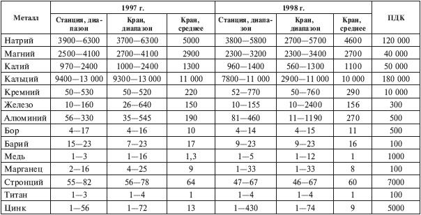
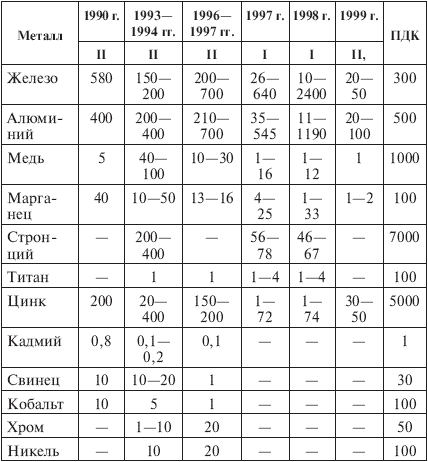

Пресная и питьевая вода .

Я рассмотрю воду Петербурга в качестве примера, а также по той причине, что имею о ней наибольший объем данных. Если вы, мои читатели, живете в другом регионе, то можете сами произвести такое же исследование. Тут важны методика, подход, и я советую вам не пользоваться информацией из сомнительных книг и статей. Всегда пользуйтесь первоисточниками, научными экологическими журналами, в которых описана экологическая обстановка вашей местности. Таких журналов много, и большая часть из них принадлежит РАН, Российской академии наук. Вот некоторые из них: «Экологическая химия», «Региональная экология» и «Экохроника» (Петербург); «Экология» (Москва); «Сибирский экологический журнал» и «География и природные ресурсы» (Новосибирск). Эти статьи доступны широкому кругу читателей, не требуют специальных знаний квантовой химии или теории относительности.
В данном разделе книги я хочу обратиться к землякам. Нам, дорогие петербуржцы, крупно повезло, хоть климат у нас и паршивый, а предприятий, загрязняющих воду и воздух, тысячи. Тем не менее в части снабжения водой Петербург находится в особых, можно сказать, уникальных условиях. С экологической точки зрения Нева не река, а довольно короткий канал, соединяющий Ладожское озеро с Финским заливом. А озеро – гигантский отстойник, в котором все загрязнения, включая промышленные и бытовые, оседают на дно и, в большинстве случаев, нейтрализуются. В результате в Петербурге пьют воду из поверхностных, довольно чистых слоев Ладоги. Предположительно эта вода почти не содержит вредных химических примесей (то есть их трудно обнаружить высокоточными методами анализа). Однако ладожская вода имеет следующие недостатки: излишняя мягкость (недостаток кальция), микробиологическое загрязнение, загрязнение хлорорганикой в результате дезинфекции и засоренность железом из-за ржавчины в водопроводных трубах. Фильтры, используемые для очистки петербургской воды, должны в первую очередь убирать микробы, вирусы, хлорорганику и избыток железа.
Не во всех регионах экологическая ситуация столь более или менее благоприятна. Взять, например, Волгу,[14] куда сливаются бытовые и промышленные отходы множества городов и предприятий, а в результате получается «компот» из тысяч веществ, очень вредных, просто вредных, нейтральных и таких, чья вредоносность или нейтральность еще наукой не изучена и даже их ПДК не установлена. Подобная ситуация существует на многих реках Европы и Америки. К сожалению, реки и озера эксплуатируются человечеством в двух взаимоисключающих режимах: как свалки для жидких отходов и как источник питьевой воды. А ведь людям нужна не только питьевая вода! Для обеспечения всех потребностей одного человека в цивилизованной стране требуется 100–150 м3 воды в год (не считая производства).
Кто же отвечает за качество воды? В российских городах есть уже упоминавшиеся государственные унитарные предприятия «Водоканал», и ответственность за питьевую воду возложена на них. Но за какую конкретно? За ту воду, которая выпускается со станций водоочистки и циркулирует в центральной водопроводной сети, подведомственной «Водоканалу», до водомерного узла жилого дома. За качество воды в кране частного потребителя отвечает та организация, которая заключила договор с «Водоканалом» на водоснабжение данного потребителя. Часть водопроводной сети от водомерного узла (т. е. снабжающая водой жилой дом) находится на балансе организации-пользователя (в нашем случае это РЭО, ПРЭО и жилкооперативы). Таково общее положение для всех российских регионов. Качество воды контролируется Госсанэпиднадзором, а научную и общественную деятельность в этом направлении осуществляет множество экологических организаций: Научно-исследовательский центр экологической безопасности РАН, Центр независимой экологической экспертизы РАН, Международная ассоциация экологической безопасности, Общественный экологический координационный совет и т. д.[15]
В Петербурге имеется пять водопроводных станций (ВС), расположенных вниз по течению Невы в следующем порядке: Южная (ЮВС) – в районе Рыбацкого, Северная (СВС) – в районе Веселого поселка, Волковская (ВВС) – у начала Обводного канала, Главная (ГВС) – около Смольного, Петроградская (ПВС) – на Большой Невке.
Очищают воду у нас хорошо, не хуже, чем в Лондоне или Париже, но эта очищенная вода поступает в водопроводную сеть по старым ржавым трубам, вдобавок насыщенной бактериальной флорой. Естественно, интенсивность загрязнения воды в трубах зависит от времени, в течение которого она добирается до крана потребителя. В районах, расположенных вблизи водопроводных станций, вода не успевает захватить слишком много микробов и ржавчины, но длина труб, проложенных в отдаленные районы, – десятки километров. Утром и днем вода в них движется медленно и насыщается бактериями и железом. Напомню, что отдаленные районы – «спальные»; утром и днем их обитатели на работе. В этот период водозабор невелик, и вода застаивается в трубах. Застаивается она и в тупиковых незакольцованных сетях. Кроме того, возможны разовые случаи ухудшения воды, связанные с сезонными изменениями, дождями и паводками, а также ремонтом водопроводов. В настоящий момент ведется реконструкция магистральной водопроводной сети, старые железные трубы заменяют на трубы из полимерных материалов, что отражается на качестве воды в разных городских районах не в лучшую сторону.
Остановлюсь на двух наиболее актуальных проблемах, связанных с содержанием тяжелых металлов в воде и вредных продуктов хлорирования воды. Данным проблемам посвящены статьи, опубликованные в журнале «Экологическая химия» [6, 18, 19].
Тяжелые металлы. Начну с проблемы, связанной с ними. Процитирую два фрагмента статьи на эту тему [19]. Авторы пишут: «Бытующее представление о том, что в водопроводных сетях города происходит существенное загрязнение питьевой воды тяжелыми металлами, имеет весьма общий характер и нуждается в качественной и количественной конкретизации». В статье описаны исследования, проведенные в 1997–1998 гг., после чего сделан вывод: «Полученные результаты не подтверждают представление о том, что в водопроводных сетях Санкт-Петербурга происходит массовое загрязнение питьевой воды тяжелыми металлами. Случаи, когда концентрация металлов превосходит ПДК, единичны и касаются только Al и Fe».
Суть исследования заключалась в следующем: в 1997 и 1998 гг. брались пробы невской воды около всех пяти станций водозабора (то есть воды до очистки), пробы воды после очистки на ВС (до выпуска в водопровод) и пробы воды «на кране» в пяти точках города (то есть воды, прошедшей по трубам). В этих трех типах проб определялось содержание металлов, а результаты сводились в таблицы и сравнивались между собой и с ПДК. Выбрав интересующие нас данные (вода после очистки и «на кране»), я составил свою табл. 3.4, которую предлагаю вашему вниманию.
Таблица 3.4. Концентрация легких и тяжелых металов и кремния в воде Петербурга (в мкг/л)

Примечание. В графе «станция, диапазон» даны минимальная и максимальная концентрации металла, измеренные в воде после обработки на ВС; в графе «кран, диапазон» – минимальная и максимальная концентрации металла, измеренные в воде «на кране»; в графе «кран, среднее» – их средняя величина. В пяти верхних позициях приведены содержания полезных ионов натрия, магния, калия и кальция, а также кремния (попросту – песка). В семи нижних позициях расположены металлы бор, барий, медь, марганец, стронций, титан и цинк, причем концентрации их меньше ПДК где в пять, а где – в сто раз (данные ПДК для титана приведены из работы [6]).
Из таблицы мы видим, насколько мягкая невская вода – содержание ионов жесткости даже по верхней границе диапазона в 10–15 раз меньше ПДК, и протекание воды по трубам на это обстоятельство никак не влияет. На концентрацию таких металлов, как бор, барий, медь, марганец, стронций, титан и цинк, перемещение воды от станции к потребителю тоже не влияет.
Самые интересные результаты относятся к железу и алюминию: во-первых, после прохождения по трубам их концентрация возрастает, а во-вторых, пиковые значения превосходят ПДК в два-восемь раз. Насколько часто это случается? Рассмотрим самую криминальную ситуацию по железу в 1998 г.: диапазон 10—2400 мкг/л, среднее 156 мкг/л, при ПДК 300 мкг/л. Диапазон 10—2400 означает, что разброс измеренных концентраций был гигантский, на два порядка, но если среднее равно 156, то получается, что высокие значения – больше трехсот, а тем более одна-две тысячи – замерялись очень редко. Это радует. Но, с другой стороны, пять точек города, в которых изучалась вода «на кране», не очень удалены от ВС – кроме, возможно, одной; и, возможно, именно в этой точке замерены большие концентрации железа. А что происходит в самых удаленных районах: в Купчино, на Юго-Западе, на Гражданке и в Озерках? Вопрос неясен, а потому стоит позаботиться о фильтре.
Но не думайте, что авторы работы [19] пытаются нас успокоить. Вовсе нет; они указывают: «В водопроводной сети происходит интенсивное загрязнение воды железом; концентрация элемента в питьевой воде по сравнению с содержанием его на выходе из ВС увеличивается не менее чем в три-четыре раза. В 1997 г. ПДК была превышена трижды: в марте в сети ЮВС (560 мкг/л), в сентябре в сети ЮВС (630 мкг/л) и в сети ГВС (350 мкг/л), а в 1998 г. – дважды в сети ГВС (май – 2400 и август – 330 мкг/л)». Загрязнение железом однозначно связано с ржавыми водопроводными трубами, а примесь алюминия появляется оттого, что при подготовке воды на ВС используют соединения алюминия.
Авторы статьи [6] в отличие от авторов статьи [19] производили анализ только водопроводной воды в одной-трех точках города, зато делали это на протяжении десяти лет и определяли в воде не только металлы, но и вредные органические примеси. В табл. 3.5 представлены результаты работ двух групп независимых исследователей. Сопоставим полученные данные.
Таблица 3.5. Содержание тяжелых металлов в питьевой воде Петербурга (в мкг/л)

Примечание. Данные таблицы приведены по материалам статей [19] (римск. I) и [6] (римск. II).
Сравнение результатов этих двух работ свидетельствует о нестабильности содержаний металлов в воде из крана, очень сильно зависящей от района города, состояния водопроводных труб и климатических изменений. Но завершить тему о металлах я хочу мажорным аккордом, самым приятным выводом из работы [19]: в силу гидрологических особенностей Невы в ее воде все-таки гораздо меньше алюминия и железа, чем в других реках нашей планеты.
Хлорирование воды. Проблема хлорорганики заключается в следующем:
а) на водопроводных станциях хлорируют воду, чтобы уничтожить болезнетворные микроорганизмы;
б) согласно российским стандартам на выходе из ВС допускается присутствие в питьевой воде 500 мкг/л свободного хлора и в сумме около 10 000 мкг/л различной органики – нефть, фенол и т. д. [6];
в) в зависимости от района и скорости водорасхода в жилых домах вода добирается к нашему крану от нескольких часов до половины суток и более. За это время хлор успевает прореагировать с остаточной органикой, отчасти превратив ее в весьма вредные хлорорганические соединения. Иными словами, происходит вторичное загрязнение питьевой воды, связанное с технологией ее микробиологической очистки на ВС.
Рассмотрим этот вопрос по материалам статей [6, 18]. Сравнивать их результаты вряд ли стоит, так как методика исследований была существенно различной: в [6], как описано в предыдущем разделе, изучались пробы, взятые из крана в нескольких петербургских районах, а в статье [18] моделировался процесс дезинфекции воды из рек Нева и Суда (Череповец). Речную воду обеззараживали тремя способами, принятыми на ВС (стандартная процедура хлорирования, хлорирование с последующим озонированием, хлорирование с озонированием и рядом дополнительных очистных мероприятий), после чего определяли вредную органику и выясняли, стало ли ее больше или меньше по сравнению с примесями в исходной речной воде.
Не вдаваясь в детали, перечислю основные результаты этих работ. В статье [6] приведены следующие данные. Установлено, что на протяжении 1990–1999 гг. содержание в воде крезолов, хлороформа и фенолов было значительным и приближалось к ПДК, а временами превосходило соответствующий норматив. Зато ДДТ (пестицид), ацетон и нитраты присутствовали в незначительных количествах: ДДТ – 0,15 мкг/л при ПДК 100 мкг/л, ацетон – 1 мкг/л при ПДК 2200 мкг/л, а нитраты – 1000–2000 мкг/л при ПДК 45 000 мкг/л. Что касается результатов, опубликованных в работе [18], то выводы неутешительны: во-первых, при дезинфекции воды содержание вредных примесей может как уменьшаться, так и увеличиваться; во-вторых, могут возникать новые хлорорганические соединения; в-третьих, озонирование усиливает генерацию этих новообразований.
Можно констатировать факт, что вопрос с надежным и не порождающим вторичных загрязнений обеззараживанием питьевой воды еще не разрешен, но это проблема не Петербурга, Москвы или Парижа, а всего мирового сообщества. Что же до наших вод, то в санэпиднадзоре мне сказали, что слухи о микробиологическом загрязнении невской воды несколько преувеличены. Так, например, человек, который не соблюдает правил гигиены, не моет руки, ест подозрительные продукты, получает в результате гораздо больше микробов, чем с водой. Но все-таки мы их получаем из воды, из воздуха и с продуктами, и тогда закономерен вопрос: почему же нет эпидемий? Видимо, потому, что наша иммунная система еще справляется с этой напастью.
В заключение главы я хотел бы дополнительно сообщить читателям сведения, взятые из [6]. А именно: самые жуткие яды (вроде акриламида, бенз(а)пирена и некоторых убийственных пестицидов) относятся к первому классу опасности; во второй класс входят кадмий, свинец, кобальт, барий, молибден, алюминий, стронций, бензол, ДДТ, хлороформ; в третий класс – хром, титан, никель, ванадий, марганец, железо, медь, цинк, ацетон, нитраты;[16] в четвертый – фенол. Эта краткая информация, а также сведения из приложения 2 позволят вам сориентироваться в жизни и не бояться зря; случается, мы вдыхаем пары ацетона, полощем горло марганцовкой и уж наверняка едим огурцы с нитратами. Однако не умираем.